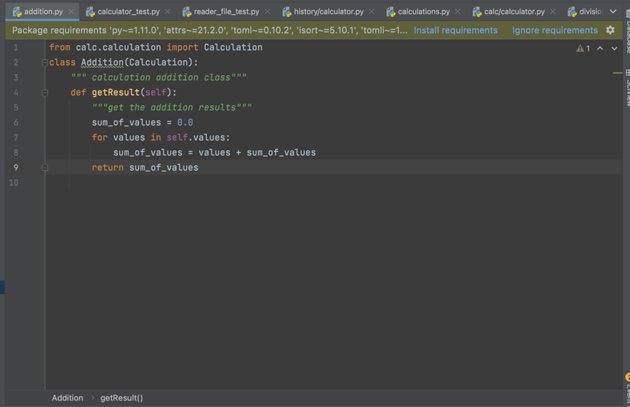
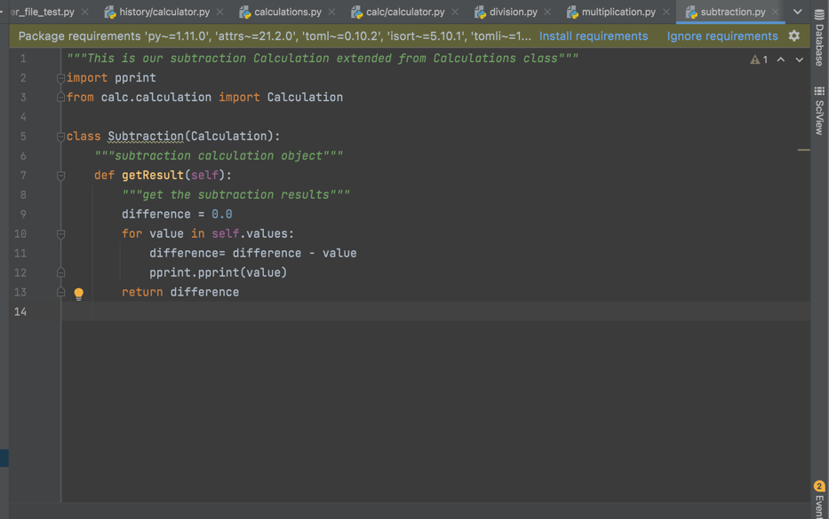
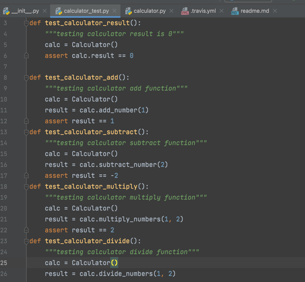
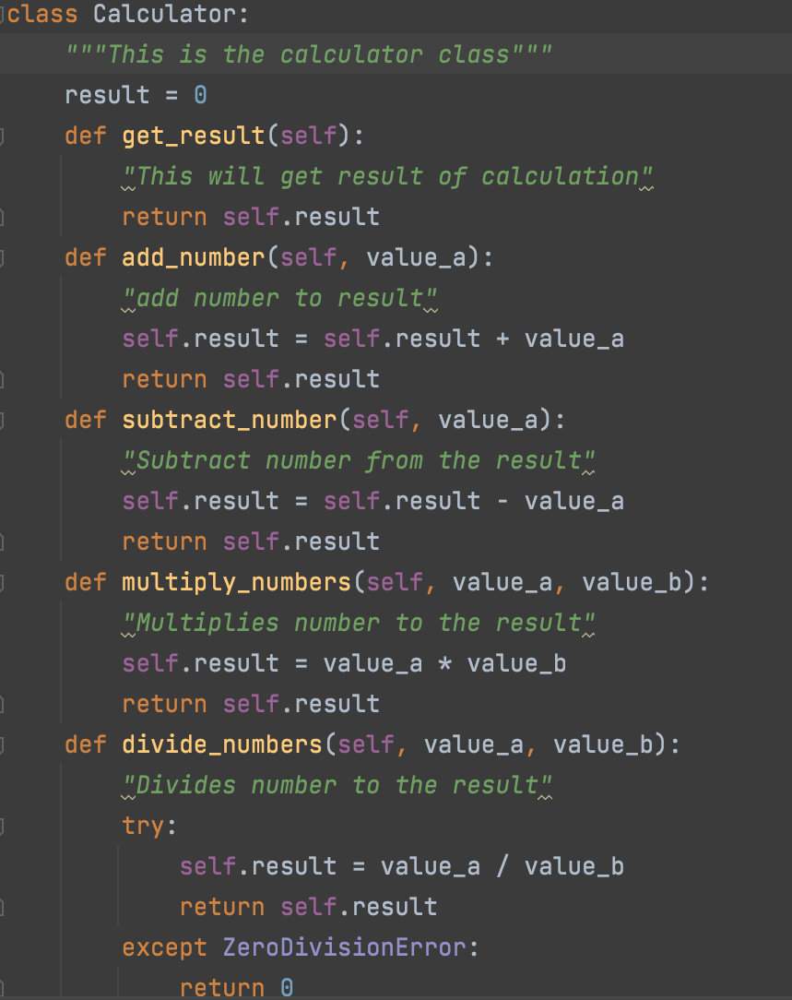
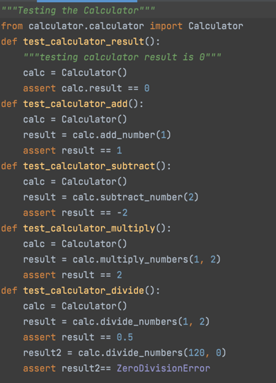
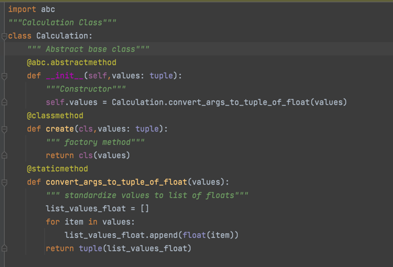

Understanding SOLID
Many object-oriented languages overlap in many things, from usage of certain structures for the codes or using similar libraries. In the same sense, most object-oriented programing relied on a set of principles that are important in creating software. One such principle is called SOLID. Solid is an acronym and it stands for:
Now that we know what the abbreviations let's talk about what each term means.
Single Responsibility Principle
Single Responsibility Principle means that every module, class and function needs to be functional for a single part of the program's functionality. This means that classes, modules, or functions mist have only one job. So for example in our calculator we have multiple classes, like division. subtraction, addition, or multiplication; but each of these classes have one single function. No function overlaps another function.
 Often times we see programs where a piece of code that does multiple things like it loads data, modifies it, plots them, and then returns the result. So a great way to write the code is to split the functions in to smaller or atomic functions. Like our calculator class. With this method, we only need one reason to change each function that is connected with the calculator class.
This type of format allows the coder a lot of ease in localizing error. Meaning that if there is any issues with one section of our code then we can locate the code's error using the smaller sections of our code. This accelerates the process of debugging our program and also makes it an efficient process. This is also a way for us to reuse our code in another section of the program which we see when we do tests with multiple classes, be it calculator class, addition, subtraction, multiplication and division classes. Finally, this also allows the coder to write efficient and detailed codes with some ease.
Open-Closed Principle
Open-Closed Principle is the idea that the codes that are already written should not be modified because new functions are added in. This in no way means that we cannot or should not change our codes when we make mistakes or need to modify them, but if the sole cause of modification is based on us adding new functions then it is not needed or required. One of the best things about our calculator was the fact that when we added new functions old codes were not needed to be changed. For example, our simple calculator with the calculator test lacked the division function. So instead of changing all the codes that were previousaly there, we just added a new function and modified the test class to include the new functions.
 As you can see in our above example, we did not modify any codes that were previously written, we simply added the division function and then divide by zero error, in both test and the actual calculator.
Liskov Substitution Principle
In this portion of the principles, the main idea is that any classes that are derived, they should be substitutable for their bases classes.Simply put, if a subclass redifined a function in the parent class, then the client or user should not notice any changes or behaviors, and it's substitute for the base class. So if you are using a function and someone else is working on the project, and they changes the base class, you as a coder should not be impacted by it and should not notice any changes. This was useful to us as students in our calculator program, because we used a repository created by our professor, but each time we modified or changed the base classes or created substitutes, it did not affect the code what-so-ever. It was not catchable by the coder, and there were no errors.
Interface Segregation Principle
The Interface Segregation Principle is about using classes that only have interface needed (SRP) instead of using methods that will not work or aren't needed. In a general sense, interfaces that are client specific are better than those with one general purpose interface. This was seen in our Calculator program. In our calculator program, we had the division, addition, subtraction all the functions, for when we wanted to test one class let's say addition on our calculator, we only focused on the addition portion in the test class, or created an abstract base class. In this way we kept the classes seperated and the functions clean. Division did not inherit multiplication's functions and multiplication did not inherit Addition's.
Dependency Inversion Principle
In this portion of the principle, it states that the interfaces that we have spoken about above, should not depend on lower level methods. So think about how information flows in our calculator. We had a calculator that had a list of functions, and then we had the calculator_test, which would used the methods in the calculator class and use the functions in the calculator to test the method; but then how would the code be impacted if we had to rewrite the script? The entire program might lose its compatibility with older files. So a great way to solve this problem is using abstraction that takes this information and passes this over. The problem in python is that there are no abstraction principle, but we can always overcome this problem using ABC, or abstract base class, or type hints, which allow us to specify parameter types and return parameters. So in our Calculator we created an abstract class. This abstract class So this allows the calculator to inherit only the method's calculation class has.
So this basically helps us seperate components. It helps reduce coupling in our codes, and allows us to have a code that is clean in result along with it being extremely easy to change.